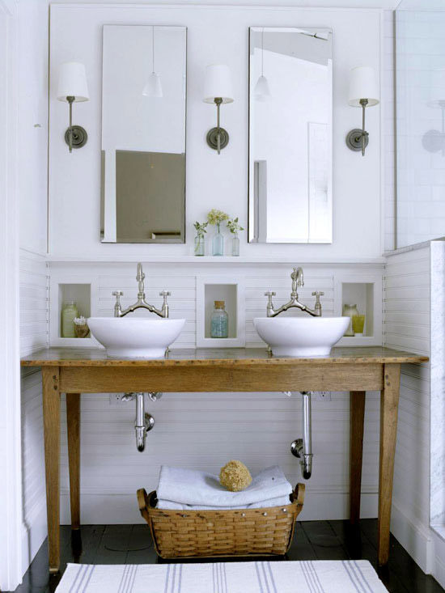
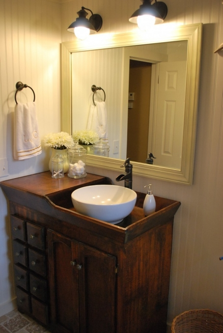

.png)
.PNG)
.PNG)
.PNG)
.PNG)
.PNG)
.JPG)
.JPG)
.PNG)
.PNG)


Do you have furniture in your bathroom? Or maybe the better question is, do you have space for furniture in your bathroom? I have been noticing lately as I have perused a zillion bathroom photos, that the ones I seem to like the most, all have a piece (or two) of furniture in them. But I am not talking about rooms where they have repurposed a table or vanity for the sink like this….
or this clever idea…
or this pretty one. Atlanta Homes Magazine
Atlanta Homes Magazine
Although I do like reusing old pieces, when I say “furniture in the bathroom” I mean something a little different. And I am not talking furniture that is built in either – like this.. (although this is a great piece!)

or this. Better Homes and Gardens
Better Homes and Gardens
No, what I am talking about is real deal you-brought-it-into-the-room furniture, and you can move it around if you need to. If I only had a very small area, I would bring in a stool or a very small table – like here.
 from New England Magazine via this source
from New England Magazine via this source
If I had a little more space, I would try to fit in a chair. Elle Decor
Elle Decor

Sarah Jessica Parker had room to put this cute medical supply cabinet between the sinks. It added a nice accent of blue and some storage.
A vanity in the bathroom would be useful and appropriate for the room, don’t you think?
If there is enough room, I really like to see dressers or cabinets in there.
If I had a place for it, I would love to put this yellow piece in one of our bathrooms. That color is so cheerful. And this is/was an Ikea piece! (not sure they still carry it.)
Now let’s look at some tall ones that really give you something interesting for the room and tons of space for storing things.
You would have to have a very large wall with little on it to use this one…but just think about everything you could put in it.
And finally, this gorgeous armoire is for those of you with an entire wall space just waiting for a piece of furniture.

Better Homes and Gardens via the Design Notebook
Our children’s bathroom only has a teeny tiny wicker table/stool, but our master bathroom has 2 large antique pieces. In fact, when we were designing that room, I made sure we left room for one specific piece of furniture.
So back to my original question at the beginning of the post…
Do you have furniture in your bathroom?
We’d love to hear from you!


.PNG)
[…] Source: 1 / 2 / 3 / 4 / […]
Hi again! Two comments on one post!(I guess I’m making up for my absence) I, too, love mint in the garden! So far I have Chocolate mint and Pineapple mint, I love them both, esp. the Pineapple because it’s varigated! Do you have those as well?
————————————————————————-
Kim, Wow you did good to get those pieces of furniture in your bathrooms! We’ve been missing you around here, and I’m happy you have been able to do some catching up. I don’t have any scented geraniums, but I have looked at them in the store (and sniffed them.) I like my geraniums for a shot of red, and I like my mint in different scents…I think I have 3 varieties of them now. Thanks for coming back and leaving your nice comments here!
Kelly
Hi Kelly! Wow, I’ve got a lot of catching up to do! Way back when you posted about your half bath(that was when I got a little blog lost) to your most recent about furniture in bath (I have been able to put a dresser in one and an old small hutchy thingy in the other) I have loved the pictures that you’ve taken and the words that you’ve spoken! Oh,and I enjoyed the herb garden post as well! Do you have any scented geraniums? I am so in love with them!!! Anyway, sorry I have been absent! And sorry if my comment is a bit confusing…so much to say!
You find the loveliest images, Kelly! I don’t have furniture in our bathroom. It’s about the size of a postage stamp :0
———————————————————————
Elizabeth, I decided today when I was cleaning the bathroom that having a postage stamp size one would definitely have its advantage! Glad you liked the pictures.
Kelly
You found some amazing bathrooms. I think my favorite is the one with the twim raised sinks. I would love any of them, but I have a tiny bathroom in my 1928 cottage. As I was lying in bed waking up this morning I was doing a major bath/closet remodel in my mind. Oh, if only I won the lottery and could follow through.
———————————————————————–
Carol – A 1928 cottage – how neat!! Sometimes I wish I could win a lottery too (although college costs would take it all away from me – ha ha.) Remodeling – especially bathrooms and kitchens can get quite costly. So glad my husband can do a lot of it for me around here.
Kelly
Pinned just about every one of those images 🙂
I love furniture in a bathroom.
———————————————————————
Emily – Furniture adds so much to a bathroom, doesn’t it? Thank you for reading here today and pinning the pics!
Kelly
Oh my gosh! Talk about coincidence. I am madly pinning bathroom pics this morning because our contractor is here and I still haven’t decided exactly how I want our remodel to look. I know what I want, but I can’t seem to get the others to see it! I definitely want a piece of furniture in our new baths!
————————————————————————-
Susan – I sure hope you found something to show your contractor. How exciting to be getting new bathrooms! Good luck with the projects.
Kelly
Hi Kelly! Thanks so much for posting a picture of our bathroom! I was so surprised when I signed on and saw it this morning 🙂 And I LOVE the use of furniture in a bathroom. I can’t wait until we have bigger bathrooms to utilize this one day!
———————————————————————-
You are quite welcome Lindsay! I thought you all were SO smart to turn that piece into the cabinet for your sink. Thanks for stopping by this morning!
Kelly
I do have a piece of furniture in my bathroom (will post about later) and a cute little antique table in husband’s bathroom. I love that first picture (as does Aimee)!
Please please please post the pics from your bathrooms!
———————————————————————-
Judy, you are lucky to have room for furniture in your bathrooms. I plan to post pics of my master bath this week…working on it. I have been trying to figure out a fabric for new drapes, and it is taking longer than I had hoped it would.
Kelly
We definitely don’t have room for furniture in our tiny bathrooms, but I love that first photo {pinned it, of course!} and that little yellow piece from Ikea is adorable!
————————————————————————
Aimee, thanks for pinning that first pic. I loved that room when I saw it! And that piece of furniture in it is so unusual. I think that yellow piece from Ikea is only available in red now…not a bad thing – just not as cute as the yellow to me.
Kelly